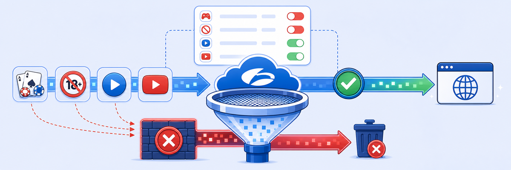

Lab 6: Validate Securing Internal and External Communication Policies
VALIDATION
Time to confirm everything you built. From each endpoint you'll verify four things, then finish with a Zero Trust remote-access scenario:
- Traffic is routed through the Zscaler cloud (
ip.zscaler.com) - The Internet is up (ping gateway, 8.8.8.8, cnn.com)
- Gambling/gaming sites are blocked (e.g.
888.com) - Inter-VLAN forwarding + the datacenter web app over ZPA behave as expected
- RDP into the Windows server via ZPA from an off-trusted-network ZCC host

- In Skytap, open OT1 (VLAN30).

Open OT1 (VLAN30).
- 6.1.1 · Cloud routing: open a browser and visit
ip.zscaler.com— it shows the nearest Zscaler service location, confirming correct routing.

ip.zscaler.com confirms traffic egresses via Zscaler.- 6.1.2 · Internet up: in the terminal test
ping 10.1.30.1,ping 8.8.8.8, andping cnn.com(orwget cnn.com).
Note: To stop a ping press Ctrl+C; to suspend it press Ctrl+Z.

Gateway, 8.8.8.8, and cnn.com all reachable.

Internet is up from VLAN30.
- 6.1.3 · URL filtering: visit
http://888.com/— it should show the block page. If not, check Chrome safe-browsing; other test URLs:http://lottery.com,http://casino.com.

Gambling site 888.com is blocked by ZIA URL filtering.
- 6.1.4 · Inter-VLAN: ping
10.1.10.10(Server, VLAN10) from OT — it succeeds (no restriction configured for this path).

OT → Windows Server (10.1.10.10) succeeds.
- In Skytap, open the IoT host (VLAN20).
- 6.2.1 · Cloud routing: run
wget http://ip.zscaler.com— the response shows the Zscaler service location.

IoT traffic egresses via Zscaler.
- 6.2.2 · Internet up:
ping 10.1.20.1,ping 8.8.8.8,wget cnn.com.

Gateway + 8.8.8.8 reachable.

Internet is up from VLAN20.
- 6.2.3 · URL filtering:
wget http://www.888.com— confirm it's blocked.
- 6.2.4 · Inter-VLAN: ping
10.1.10.10(Server) from IoT — it succeeds.
- In Skytap, open the Server (VLAN10).
- 6.3.1 · Cloud routing: visit
ip.zscaler.com.
- 6.3.2 · Internet up: from Command Prompt:
ping 10.1.10.1,ping 8.8.8.8,ping cnn.com.

Gateway + 8.8.8.8 reachable.
- 6.3.3 · URL filtering: visit
http://www.888.com— confirm it's blocked.
- 6.3.4 · ZPA outbound: open a browser and load
http://dcweb.ztwan.lab/— the datacenter-hosted page loads over ZPA.
Caution: Use the full URL with http:// (not https://) or the connection will fail.
- In Skytap, open the ZCC Lab Machine VM.
- Log into Zscaler Client Connector: username
pod##-student@<FQDN>[1] › Login [2], then the emailed password [1] › Sign In [2].

Enter the emailed password → Sign In.
- ZCC minimises to the Windows tray — reopen it.
- Confirm Private Access & Internet Security = ON, Authentication = Authenticated, Network Type = Off-Trusted Network.

ZCC: Private Access + Internet Security ON, Authenticated, Off-Trusted Network.
- Confirm web traffic is forwarded to Zscaler: browse to
http://ip.zscaler.com— the public IP shows a Zscaler datacenter (true identity hidden).

User egresses via a Zscaler datacenter — no company identity exposed.
- 6.4.1 · Ping test: from a command prompt,
ping 8.8.8.8andping cnn.comto confirm Internet. - 6.4.2 · Verify Win10 client:
ping 10.1.10.10.
- 6.4.3 · RDP via ZPA: open Remote Desktop, computer
10.1.10.10, useradministrator, passwordZscaler123!, then Yes to connect. You reach the Windows 10 VM.

administrator / Zscaler123! → connected over ZPA.
- 6.4.4 · Verify the session: in Experience Center go to Logs [1] › Diagnostics [2], expand your session with the > icon [3] to see username, policy name, application port, etc.

Logs › Diagnostics › expand the remote session.
Done: Every endpoint validated and private RDP brokered through ZPA. Next, explore Logs and Monitoring.
MENTAL NOTE
Per-endpoint checklist: ip.zscaler.com (cloud routing) → ping gateway/8.8.8.8/cnn.com (Internet) → 888.com blocked (ZIA URL filter = proof of forwarding) → inter-VLAN +
http://dcweb.ztwan.lab/ over ZPA. ZPA RDP: ZCC (Off-Trusted, Authenticated) → RDP 10.1.10.10 (administrator / Zscaler123!) → verify in Logs › Diagnostics. ZPA = per-app access, server never exposed to the Internet — unlike a VPN.ASK A QUESTION
ADD A NOTE